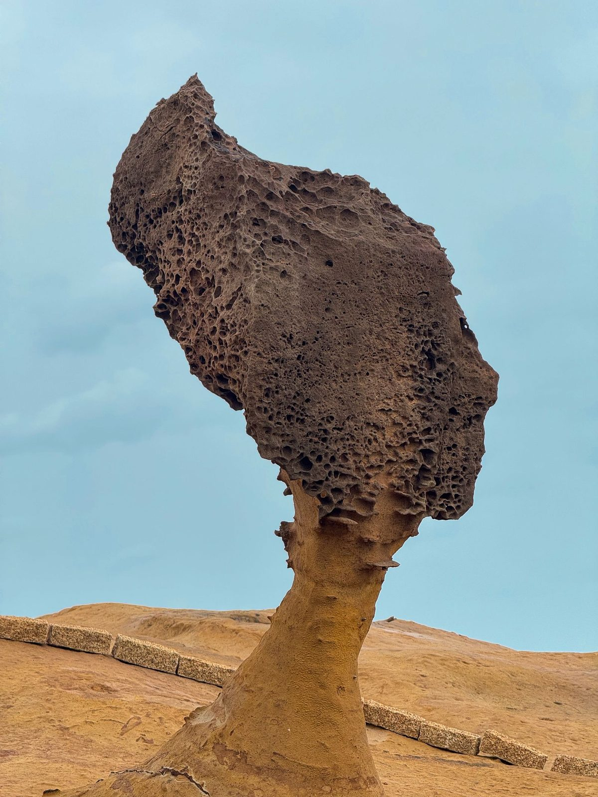

예스폭진지 택시투어 vs 버스투어, 뭐가 나을까?
1인 1만 원대 버스투어와 차 1대 요금 택시투어 — 가격만큼 중요한 건 하루에 몇 곳을 넣느냐예요.
게시
"예스폭진지, 택시투어로 갈까 버스투어로 갈까요?" 예스진지는 예류(野柳)·스펀(十分)·진과스(金瓜石)·지우펀(九份)을 하루에 도는 타이베이 출발 코스이고, 예스폭진지는 여기에 스펀폭포를 더한 코스예요. 예스폭진지 택시투어와 버스투어는 요금 매기는 방식부터 달라요. 예류지질공원 공식 안내, 신베이시 교통국 보도자료, 여행 플랫폼 상품 안내를 바탕으로 2026년 10월 기준으로 정리해봤어요.
01 · 예스폭진지 택시투어 vs 버스투어, 한눈에 비교하기
| 항목 | 버스투어(가이드 합류형) | 택시·전세차 투어 |
|---|---|---|
| 가격 기준 | 1인당 요금 | 차 1대당 요금 |
| 가격 예 | 최신 가격은 예약 사이트에서 확인하세요 | 차 1대 NT$4,000부터(약 9시간) |
| 출발·소요 | 메인역·시먼역 집합, 10:00~12:30 출발, 9~11시간 | 출발 시각·순서를 직접 정함 |
| 안내 | 한국어 가이드 동행 상품이 많음 | 운전만 하는 기사가 많음 |
| 승하차 | 정해진 집합 장소 | 숙소 앞 승하차(도심 밖·공항은 추가 요금) |
| 지우펀 주말 통제 | 셔틀 대신 대중교통 이용 가능 | 외곽 주차장에서 셔틀로 갈아탈 수 있음 |
가격은 여행 플랫폼 판매 페이지와 업체 표시가 기준이라 시즌·환율·상품마다 달라요(2026년 10월 기준). 예류지질공원 입장료는 공식 기준 일반 NT$120, 6~12세·65세 이상 NT$60, 6세 미만 무료이고, 개장 시간은 08:00~17:00(여름 08:00~18:00)입니다. 입장료는 두 방식 모두 대개 따로 내요.
02 · 가격 구조, 1인 요금 vs 차 1대 요금
버스투어는 1인당 계산 합류형 한국어 가이드 버스투어는 1인당 요금이고 프리미엄형 상품도 있어요. 예약 사이트에서 최신 가격을 확인하세요. 입장료·풍등·식사는 대부분 별도입니다.
택시투어는 차 1대 기준 예류→지우펀→스펀 코스를 차 1대 NT$4,000부터(최대 9시간) 받는 업체가 있고, 9인승 밴은 NT$5,500부터예요. 4명이 5인승 1대를 나누면 1인 NT$1,000 수준이 됩니다.
추가 요금 항목 초과 시간은 시간당 NT$400~700, 타이베이 도심 밖이나 공항 승하차는 NT$300~1,300이 붙는 상품이 많아요. 유류비·통행료·주차비 포함 여부도 업체마다 달라요.
인원 제한 5인승은 최대 4명, 9인승은 최대 8명이 기준이에요. 캐리어까지 싣는다면 짐 개수를 예약할 때 같이 알려 주세요.

03 · 일정 자유도와 머무는 시간
버스투어는 시간이 정해져 있어요 집합 시각과 장소별 체류 시간이 일정표로 정해져 있어요. 장소별로 얼마나 머무는지는 상품마다 달라서, 예약 전에 일정표를 꼭 확인하세요.
최소 출발 인원 15명 이상이 모여야 출발하는 상품도 있어요. 인원이 모자라면 며칠 전에 취소 안내가 오니 마지막 날 일정에 넣을 때는 대안을 생각해 두는 편이 좋습니다.
택시투어는 순서를 바꿀 수 있어요 오전에 예류를 먼저 보고 지우펀은 붐비기 전에 들르는 식으로 순서를 직접 정할 수 있어요. 스펀폭포를 넣을지 빼서 '예스폭지·예스진지'로 줄일지도 고를 수 있습니다.
가이드 vs 기사 버스투어 가이드는 풍등·간식 주문 같은 현장 안내를 도와주는 경우가 많아요. 택시투어 기사는 운전만 하는 상품이 많으니 설명이 필요하면 예약할 때 확인하세요.
04 · 지우펀 주말 교통 통제와 승하차
주차장이 차면 탄력 통제 신베이시 교통국은 휴일에 지우펀 옛거리 주변 주차장이 차면 경찰이 교통 예고·탄력 통제를 시작해 차량을 新九號·水湳洞 주차장으로 보내고, 셔틀버스로 갈아타게 한다고 안내해요(2026년 2월 보도자료).
버스투어도 영향을 받아요 주말·공휴일 통제 때는 셔틀 대신 대중교통(편도 NT$15, 본인 부담)으로 지우펀에 올라가는 버스투어 상품도 있어요.
통제 시간은 공지마다 달라요 연휴마다 통제 단계와 시간이 다르게 공지돼요. 주말·연휴에 택시투어를 예약했다면 기사에게 통제 때 어디서 내리는지 미리 물어보세요.
숙소 앞 승하차 택시투어는 숙소 앞에서 타고 내릴 수 있어 마지막 날 캐리어를 실은 채 돌다가 공항으로 가는 일정도 짤 수 있어요. 공항 하차는 추가 요금이 붙는 경우가 많습니다.

05 · 어떤 여행자에게 맞을까
혼자·2명이면 버스투어 1인 요금이 낮고 가이드가 동선을 챙겨 줘서 혼자나 둘이 가는 첫 대만 여행이면 부담이 적어요.
4명 이상·부모님 동반이면 택시투어 차 1대 요금을 나누면 1인 부담이 줄고, 숙소 앞 승하차와 쉬는 시간을 마음대로 정할 수 있어요. 가족 예약 체크리스트는 대만 가족여행 프라이빗 택시 글을 보세요.
대중교통으로 직접 가고 싶다면 투어 없이 가려면 지우펀 965번 버스 타는 법과 예류→지우펀 버스 이동을 참고할 수 있어요.
렌터카로 직접 운전한다면 주차 위치와 통제 때 동선은 지우펀 렌터카 주차 가이드에 정리해 뒀습니다.
"當九份老街周邊停車位趨於飽和時，警方即啟動交通預警與彈性管制措施." — 지우펀 옛거리 주변 주차장이 차면 경찰이 교통 예고와 탄력 통제를 시작한다는 신베이시 교통국 안내예요.
지우펀에서 머무는 시간을 어떻게 쓸지 정했다면 지우펀 맛집 지도와 지우펀 카페 맛집에서 미리 골라 두세요. 옛거리 위쪽의 微光森林 Twilight Cafe, 스펀에서 출출할 때는 스펀 소세지도 지도에 있어요. 영업시간은 방문 전 구글맵에 등록된 정보를 확인하세요.
지도에서 지우펀 맛집도 확인해보세요
투어 일정 사이사이 들를 지우펀·스펀 먹거리를 미리 찜해 두면 짧은 체류 시간도 덜 아까워요.